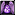
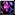
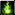
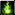

Cataclysm Changes
Mastery - mastery este un nou stat adaugat in cataclysm care mareste damageul dat la cel mai benific lucru de pe specul vostru. La Demonology Warlock mastery mareste cu 2.3% damageul dat de pets si de noi cand suntem in Metamorphosis pentru fiecare punct de mastery. Base mastery este 8 --> +18.4% damage increase la pets si la Metamorphosis. La Metamorphosis cu 0 mastery cum era pe lk aveam 20% damage increase , iar acuma cu base mastery o sa avem 38.4%.
1 Mastery point = 179 Mastery Rating.
Dark Intent - este un buff care poate fi aplicat pe pet sau un player. Acesta va va da amandurora 3% haste , iar cand warlock-ul da un crit cu un DoT celalalt primeste 1% DoT damage increase si 1% HoT healing increase(stack 3 times), iar cand playerul care a primit Dark Intent, de la warlock desigur, da o crit cu un DoT sau un HoT warlock-ul primeste 3% DoT damage increase(stack 3 times).
Prioritatea claselor/specului care merita dark intent este: Shadow Priest=Balance Druid=Restoration Druid>Fire Mag>Feral Druid>Survival Hunter.
ATENTIE! Nu dati dark intent pe alt warlock chiar daca este affliction deoarece va disparea cand si el da dark intent pe altcineva.
Soulburn - acesta vraja este singura care mai foloseste Soul Shards. Este un cooldown important, foarte folosit la Destro Locks pentru un Soul Fire instant si la restul specurilor pentru summonarea petului daca este mort. La noi este foarte bun pentru Pet Twisting si pentru resumonarea petului daca este mort si Demonic Rebirth este la cooldown.
NEW! Daca aveti 4/5 piese din Vestement of the Faceless Shroud(Tier 13) Soulburn va da 10% boost la spell power pentru 10 secunde de fiecare data cand este folosit si el va da inapoi Soul Shard-ul folosit daca este folosit pentru a da Soul Fire.
Soul Harvest - este o vraja care este utila intre combaturi pentru regenerarea vieti si a Soul Shard-urilor. Atentie acesta vraja nu poate fi folosita in combat.
NEW! Soul Harvest are un nou visual effect din 4.2.
Fel Flame - este o vraja instanta care da Shadowflame damage si care mareste durata dotului  Unstable Affliction sau
Unstable Affliction sau  Immolate pe target cu 6 secunde. Aceasta vraja nu este una care face parte din rotatia unui warlock pe nici un spec. Ea este folosita doar in miscare cand nu poti sa sa castezi sau cand ai Tier 11 4P Bonus procuit.
Immolate pe target cu 6 secunde. Aceasta vraja nu este una care face parte din rotatia unui warlock pe nici un spec. Ea este folosita doar in miscare cand nu poti sa sa castezi sau cand ai Tier 11 4P Bonus procuit.
Demon Soul - aceasta vraja mareste bonusul anumitor abilitati in functie de petul care il ai summonat la momentul in care il dai. Este un cooldown important si trebui sa fie folosit ori de cate ori ai petul in viata si nu este pe cooldown.
Hand of Gul'dan - aceasta abilitate de direct damage este un cooldown specific doar warlockului demonology. Aceasta vraja lanseaza un meteor spre target care da Shadowflame damage si mareste sansa de criticala a petului de la warlock impotriva targetului cu 10%.
Changes through Cataclysm
Patch 4.1
- Dark Intent: The friendly target of this ability now receives 1% (stacking 3 times to 3%) periodic spell damage and healing bonus instead of 3% (stacking 3 times to 9%). The casting Warlock still receives 3% (stacking 3 times to 9%).
- Rain of Fire damage has been increased by 25%.
- Seed of Corruption damage has been increased by 20%.
- Soulstone can now be used in combat to resurrect a targeted dead player.
- Talent Specializations
- Affliction
- Haunt damage has been increased by 30%.
- Shadow Mastery (passive) has been increased to 30%, up from 25%.
- Unstable Affliction damage done when it is dispelled has been doubled, but this damage can no longer be critical.
- Demonology
- Mana Feed now restores more mana (four times as much) when the warlock is using a Felguard or Felhunter.
- Pets
- Doomguard's damage has been increased by 50%. The Doomguard is intended to be the best guardian for single-target damage, and the Infernal the best when there are multiple targets.
- Lash of Pain (Succubus) damage now scales with level, reducing the damage done at lower levels such that it will deal 50% damage at level 20, and 100% damage at level 80 and above.
- Shadow Bite (Felhunter) damage and effect has doubled, and is now available at level 30, down from 42.
- Whiplash (Succubus) now knocks targets away from the center of the targeted location, instead of away from the Succubus.
- Glyphs
- Glyph of Soul Swap now increases the cooldown of Soul Swap by 15 seconds, up from 10 seconds.
- Bug Fixes
- Imps summoned by Bane of Doom now benefit from the warlock's stats.
- Soul Link will no longer be removed by mounting when in a Rated Battleground.
- Damage dealt by Unstable Affliction when it is dispelled now properly benefits from Shadow Mastery.
Patch 4.2
- Soul Fire is now available at level 20, down from level 54.
- Soul Harvest has a new spell effect.
- Glyphs
- Glyph of Soul Swap now applies a 30-second cooldown to Soul Swap, up from 15 seconds.
- Bug Fixes
- It is no longer possible to leave combat while channeling Drain Soul.
Patch 4.3
- Shadow Bolt has a new spell effect.
- Soul Fire now scales with 72.6% of spell power, up from 62.5%.
- The Voidwalker ability Suffering now works like the hunter pet talent Taunt.
- Talent Specializations
- Demonology
- Master Demonologist now grants a base bonus of 18.4% and 2.3% per mastery, up from 16% and 2% per mastery.
- Impending Doom is now also activated by Soul Fire.
- Destruction
- Fire and Brimstone now increases the damage of Incinerate and Chaos Bolt on Immolated targets by 5/10/15%, up from 2/4/6%.
- Burning Embers now deals damage equal to 25/50% of Soul Fire and Imp's Firebolt, up from 15/30%.
- Buning Embers damage cap has been raised.
- Shadowburn now deals Shadowflame damage, instead of Shadow damage.
- Improved Soul Fire now lasts 20 sec, up from 15sec.
- Bug Fixes
- Fixed a bug that caused Doomguard and Infernal to benefit dramatically more than intended from Demonology Mastery.
Races
Recommended races for warlock are:
Professions
Recommended: Tailoring & Enchanting
Consumables
Addons
- Bartender4 - addon pentru action bars.
- Shadowed Unit Frames - numele spune totul. Schimba toate Unit Frames si te lasa sa le faci asa cum vrei tu.
- Quartz - schimba cast bars.
- Power Auras Classic - addon pentru procuri.
- OmniCC - arata cooldownul pe fiecare spell imparte.
- Recount - inregistreaza dps-u.
- Tidy Plates - schimba Name Plates.
- Tidy Plates: Threat Plates - tema speciala pentru Tidy Plates.
- MoveAnything - te lasa sa muti orice frame din wow. Nu este neaparat nevoie de el dar este de mare ajutor mai ales cand vrei sa configurezi interfata de la blizz.
- DeadlyBossMods - acest addon nu este un must. El este folosit in PvE pentru a arata in cat timp urmeaza sa fie castata o vraja sau sa se intample o actiunea in encounterurile cu bosi.